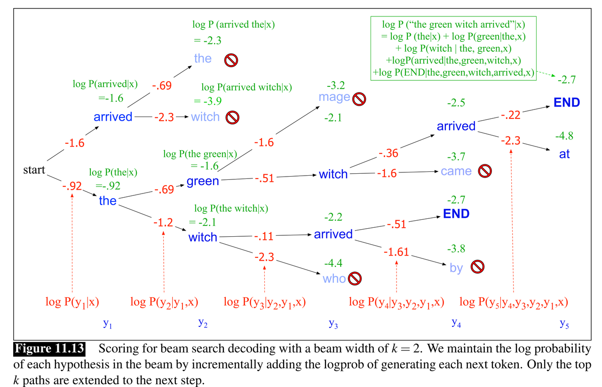

What does the beam size represent in the beam search algorithm?
I have a question about the beam search algorithm.
Let's say that n = 2 (the number of nodes we are going to expand from every
node). So, at the beginning, we only have the root, with 2 nodes that we
expand from it. Now, from those two nodes, we expand two more. So, at the
moment, we have 4 leafs. We will continue like this till we find the answer.
Is this how beam search works? Does it expand onlyn = 2 of every node, or
it keeps 2 leaf nodes at all the times?
I used to think that n = 2 means that we should have 2 active nodes at most
from each node, not two for the whole tree.
Answer
In the "standard" beam search algorithm, at every step, the total number of the nodes you currently "know about" is limited - and NOT the number of nodes you will follow from each node.
Concretely, if n = 2, it means that the "beam" will be of size at most 2, at
all times. So, initially, you start from one node, then you discover all nodes
that are reachable from it, but discard all of them but two, and finish step 1
with 2 nodes. At step 2, you have two nodes, and you will expand both, and
discard all nodes again, except exactly 2 nodes (total, not from each!). In
the next steps, similarly, you will keep 2 nodes after each step.
Choosing which node to keep is usually done by some heuristic function that evaluates which node is closest to the target.
Note that the beam search algorithm is not complete (i.e., it may not find a
solution if one exists) nor optimal (i.e. it may not find the best solution).
The best way to see this is witnessing that when n = 1, it basically reduces
to best-first-search.
Suggest

In beam search, instead of choosing the best token to generate at each timestep, we keep k possible tokens at each step. This fixed-size memory footprint k is called the beam width, on the metaphor of a flashlight beam that can be parameterized to be wider or narrower.
Thus at the first step of decoding, we compute a softmax over the entire vocabulary, assigning a probability to each word. We then select the k-best options from this softmax output. These initial k outputs are the search frontier and these k initial words are called hypotheses. A hypothesis is an output sequence, a translation-so- far, together with its probability.
At subsequent steps, each of the k best hypotheses is extended incrementally by being passed to distinct decoders, which each generate a softmax over the entire vocabulary to extend the hypothesis to every possible next token. Each of these k∗V hypotheses is scored by P(yi|x,y<i): the product of the probability of current word choice multiplied by the probability of the path that led to it. We then prune the k∗V hypotheses down to the k best hypotheses, so there are never more than k hypotheses at the frontier of the search, and never more than k decoders.
The beam size(or beam width) is the k aforementioned.
Source: https://web.stanford.edu/~jurafsky/slp3/ed3book.pdf